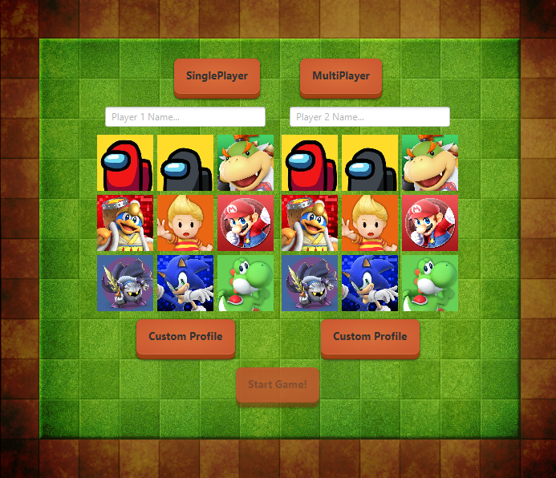
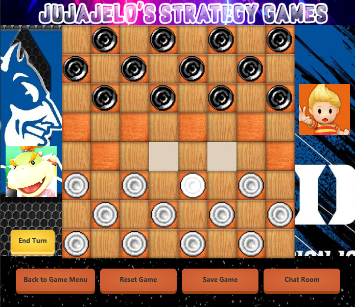
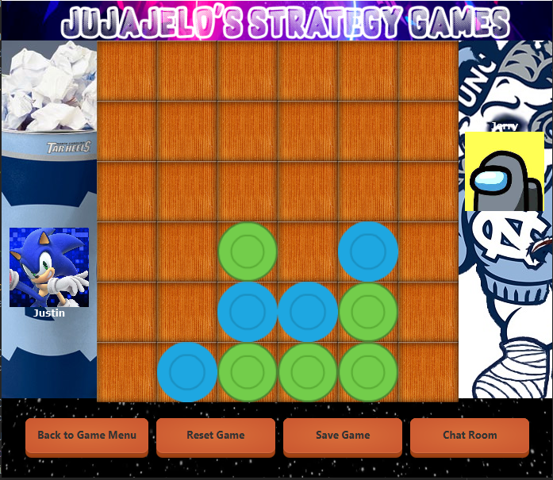
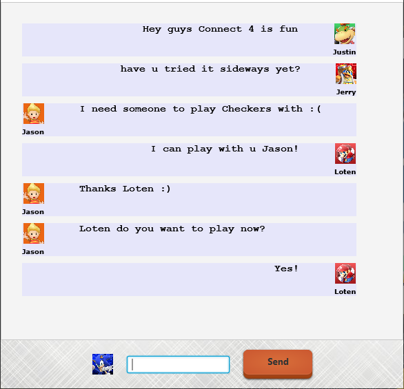
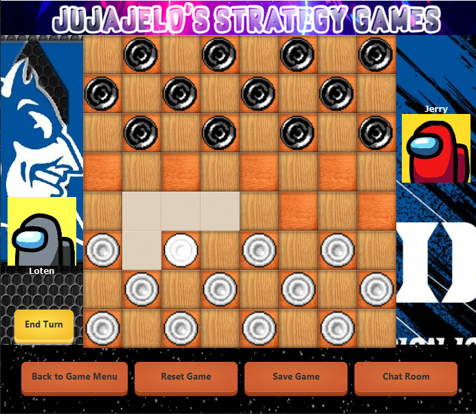

Java Board Game Collection
OCT 2020 - DEC 2020
Group Members |
 |
|
 |
The TaskOur goal was to design and develop a Game Board Collection in Java as part of our final project for CS307: Software Design & Implementation. This project was built following the Agile/Scrum software development cycle completed in planning, 3 sprint stages, and a post-reflection stage. We also adhered to object oriented programming principles in developing our code. Our group wanted to create a small library of board games with flashy front-end graphics with a fully modular backend to implement variations of any of our board games with custom rules without the need of adding in additional code. I worked solely on the front-end implementation in JavaFX and assisted in interfacing with the back-end. |
Our Approach
|
 |
|
 |
The SolutionThe whole development process took about a month from start to finish. My team and I met almost daily in discussing our progress and additional features to implement. While following the Agile/Scrum software development cycle, we had weekly sprints and analysis periods to analyze and refactor each other's work. Each team member put in approximately 20 a week on the project. We were able to fully meet and exceed our goals and implemented additional features with a chatroom, leaderboad, and simple AI. Users are able to pick from 3 different languages, 3-5 different board layouts depending on the game, save/load games, and pick custom themes and profile pictures. You can visit a clone of our repository here! |
Checkers Mod - Different Move Options |
Video Demonstration |